🏠 ESP32 DeskHub v5.0.1 Wiki & Kurulum Merkezi
2.4" ve 4" dokunmatik TFT ekranlar, PCM5102A MP3 İnternet Radyosu, 5× WS2812B akıllı durum LED'i, 7 saat teması ve Wi-Fi OTA destekli açık kaynak masaüstü asistanının eksiksiz kurulum rehberi.
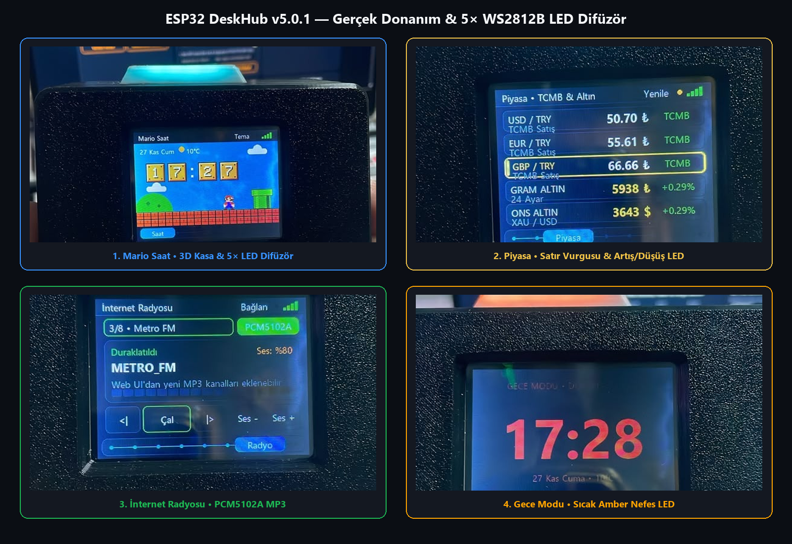
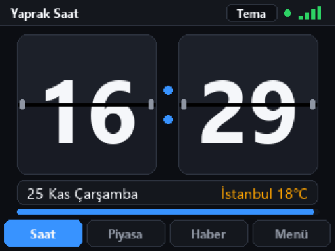
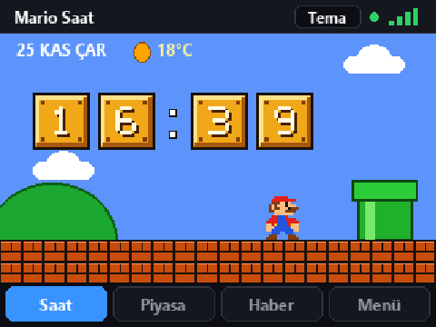
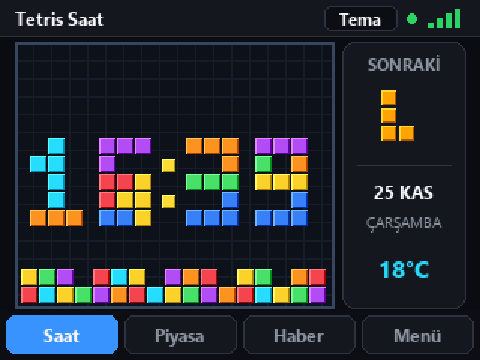
🚀 Tek Tıkla Tarayıcıdan Firmware Yükle (WebSerial USB)
Derleyici veya Arduino IDE kurmadan, Google Chrome veya Microsoft Edge üzerinden ESP32'nizi USB kablosuyla bilgisayara bağlayıp doğrudan yükleyin.
BOOT tuşuna basılı tutarken EN/RST tuşuna basıp bırakın.
3) Cihazınızda zaten v4.0+ yüklüyse USB'ye gerek kalmadan http://deskhub.local → Wi-Fi OTA bölümüne yukarıdaki OTA .bin dosyasını yükleyebilirsiniz.
⚡ İnteraktif Devre Kurulum Animasyonu (Adım Adım)
Adımlara tıklayarak her bağlantının sırasıyla nasıl kurulduğunu izleyin veya aşağıdaki otomatik montaj animasyonunu inceleyin.
Otomatik Adım Adım Kurulum GIF'i
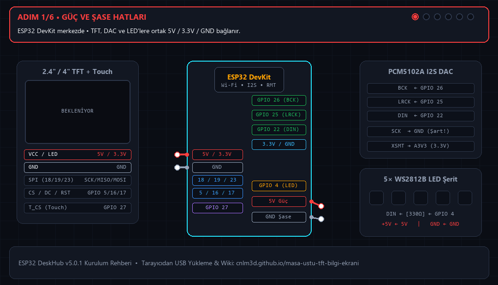
🔌 Pin Bağlantı Tabloları
2.4" ILI9341 (`esp32dev` & `esp32c3`)
| TFT Pini | ESP32 DevKit | ESP32-C3 |
|---|---|---|
VCC / LED | 5V / 3.3V | 5V / 3.3V |
GND | GND | GND |
SCK / MOSI / MISO | 18 / 23 / 19 | 4 / 6 / 5 |
CS / DC / RST | 5 / 16 / 17 | 7 / 2 / 3 |
T_CS (Touch) | GPIO 27 | GPIO 10 |
PCM5102A DAC & 5× WS2812B LED
| Modül Pini | ESP32 DevKit | ESP32-C3 |
|---|---|---|
PCM5102A BCK / LRCK / DIN | 26 / 25 / 22 | 8 / 9 / 20 |
PCM5102A SCK | GND (Şart!) | GND |
PCM5102A XSMT | A3V3 / 3.3V | 3.3V |
5× WS2812B DIN | GPIO 4 (330Ω) | GPIO 1 (330Ω) |
5× WS2812B Güç | 5V + GND | 5V + GND |
Waveshare 4" RPi LCD (A) 26-Pin Haritası
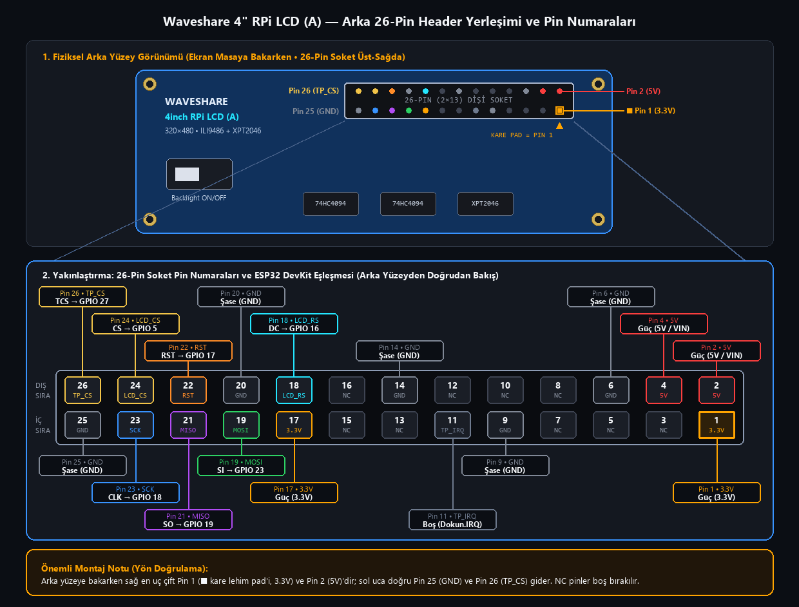
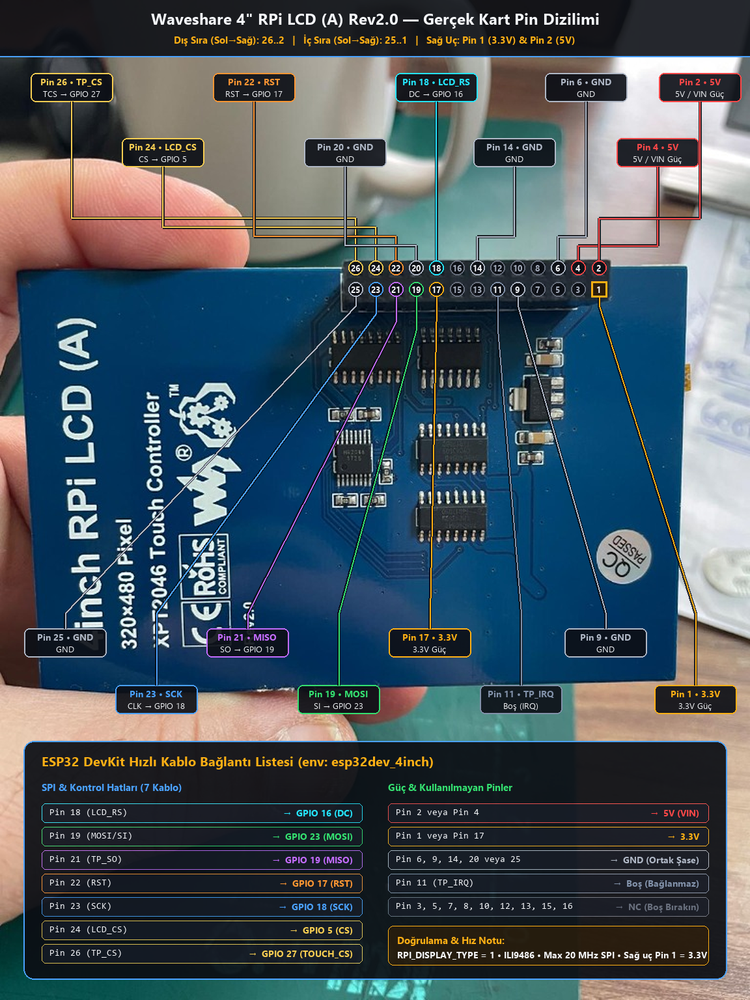
📻 İnternet Radyosu, 5-LED Efektleri & Web Kontrol Paneli
Spotify ve Bluetooth A2DP yerine gelen hafif MP3 motoru ve RMT donanım LED sürücüsüyle RAM boşluğu ve Wi-Fi OTA kararlılığı en üst seviyededir.
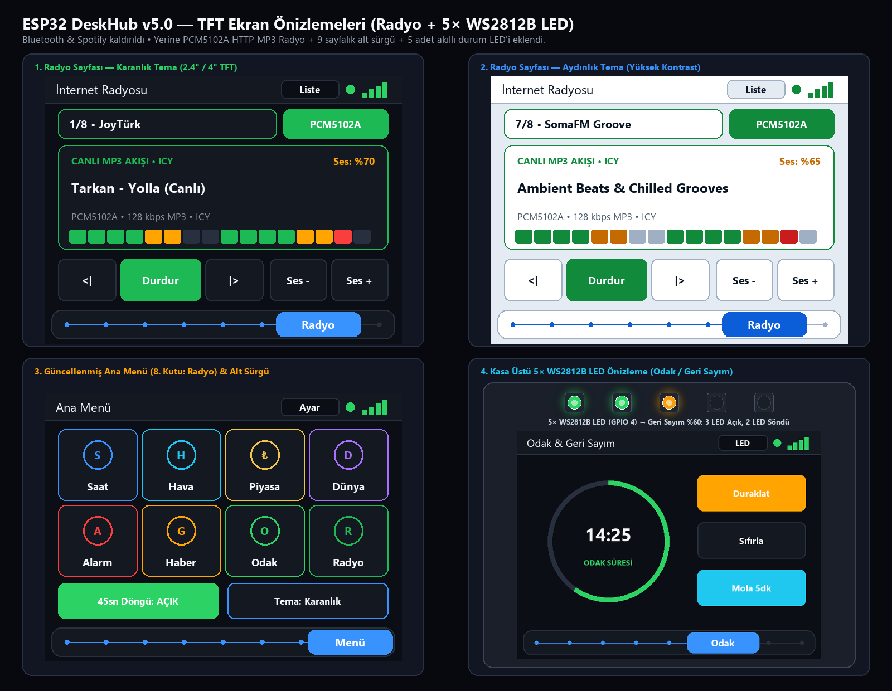
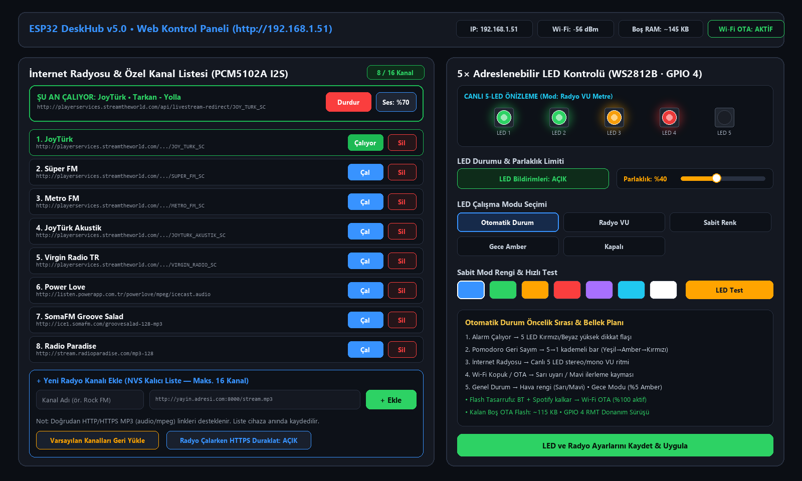
5× WS2812B LED Durum & Renk Haritası
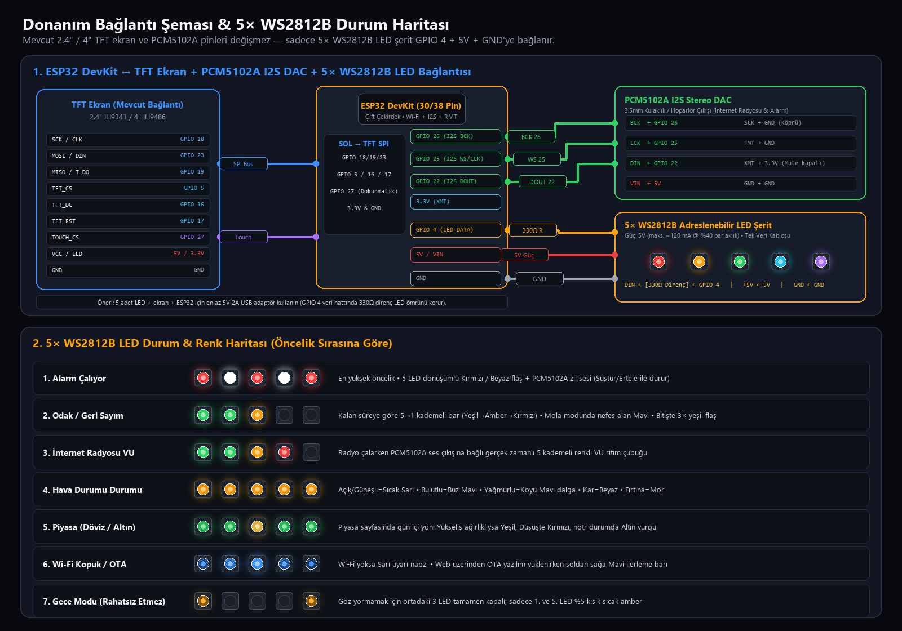
📦 3D Baskı Kasa & Sık Sorulan Sorular
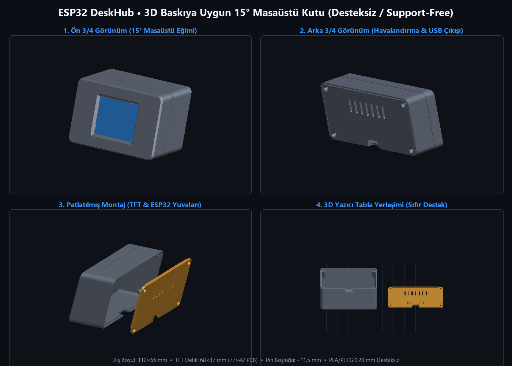
Güncel STL Dosyaları
deskhub_front_shell.stl— LED pencereli ön gövde (desteksiz)wsled cap.stl— Üst 5× LED difüzör kapağı (beyaz/şeffaf PLA)deskhub_back_cover.stl— Arka kapak
Sorun Giderme (SSS)
PCM5102A'dan hiç ses gelmiyor — neden?
1) SCK pini mutlaka GND'ye bağlanmalıdır. 2) Mor GY-PCM5102 kartlarında üst boş sıradaki XSMT deliğinin A3V3 (3.3V) deliğine köprülenmesi veya arkadaki H3L pad'inin H tarafına lehimlenmesi gerekir. 3) Eklediğiniz özel radyo linkinin AAC değil MP3 (audio/mpeg) olduğundan emin olun.
Web Flasher USB portunu görmüyor veya bağlanamıyor
Masaüstü Chrome veya Edge kullanın. Kablonuzun data hattı olduğundan emin olun; CP2102/CH340 sürücülerini yükleyin. Bağlanma aşamasında BOOT tuşuna basılı tutmak gerekebilir.
Wi-Fi veya şehir bilgisini nasıl sıfırlarım?
Cihaz açılırken Splash ekranında ekrana basılı tutun veya Web UI → Wi-Fi Kurulum Portalı butonuna basın. ESP32-DeskHub ağı açılır, http://192.168.4.1 üzerinden yeni bilgileri kaydedebilirsiniz.
deskhub.local adresi açılmıyor (modem sayfasına gidiyor)
Bazı modemlerde mDNS yönlendirmesi yerine doğrudan cihaz IP'si (ekran açılışında ve Cihaz Ayarları altında veya modem DHCP listesinde görünür, ör. http://192.168.1.51) kullanın.